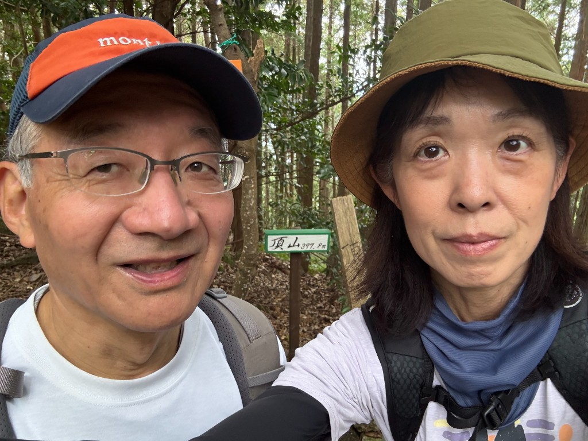

山田 太郎
はじめまして。Webの基礎を学習中です。
自己紹介
趣味は読書・散歩に加え、登山も楽しんでいます。最近は HTML と CSS に触れ始め、自分のページを作れるようになりたいと思っています。
学んでいること
- HTML（文書の構造）
- CSS（見た目の調整）
- Git / GitHub（バージョン管理）
これから
シンプルで読みやすいページを自分の力で整えられるよう、少しずつ練習していきます。内容はお好みに合わせて書き換えてください。

はじめまして。Webの基礎を学習中です。
趣味は読書・散歩に加え、登山も楽しんでいます。最近は HTML と CSS に触れ始め、自分のページを作れるようになりたいと思っています。
シンプルで読みやすいページを自分の力で整えられるよう、少しずつ練習していきます。内容はお好みに合わせて書き換えてください。